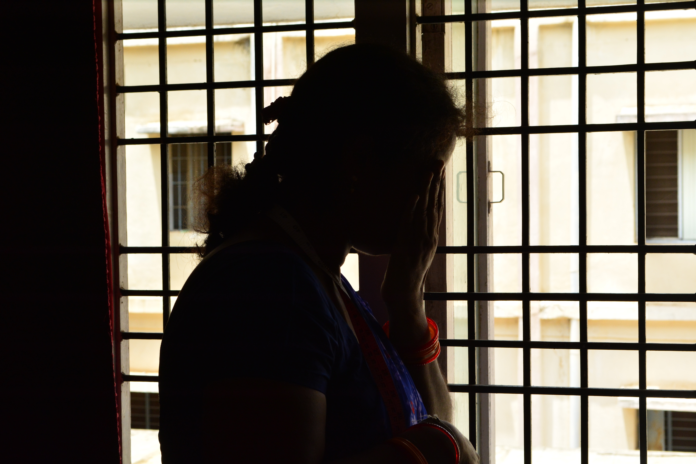

I got married when I was 14. For four years after that, I wasn’t able to have a child due to which I was perpetually harassed by my in-laws. Finally, I gave birth to a beautiful girl and got a job as a daily laborer at a local field for Rs. 15/day.
When my daughter was 13, she began being followed and harassed by an auto driver that drove around her school. He would beg her to marry him and threaten her and us with death if we refused. It was an extremely harrowing experience.
I wanted my daughter to have a different life than me.
I had heard about the tailoring unit at Aarti Home and I enrolled for the free training program along with 40 other women. I started with a salary of Rs. 150 a month and when the training was over, I couldn’t imagine going back so I asked for a permanent job at Aarti Home.
Once I was settled, I spoke to Sandhyamma about the situation with my daughter and she immediately stepped in to help, moving my daughter to a boarding school in another state. She’s now doing so well for herself and I couldn’t be more proud of her!
I earn Rs. 12,000 a month and have now learnt proper tailoring skills. Aarti Home has encouraged and helped me to do better for myself and for my daughter.
Sometimes I miss her tremendously and I wish I could hug her just once but I know that she is independent and has built a wonderful life for herself and I’m extremely happy.